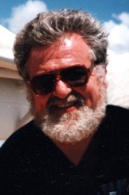

Please note: the AAS Obituaries are temporarily being hosted on this website while their full content is being ingested into the PubPub publishing platform newly adopted by the Bulletin of the American Astronomical Society. When the migration is complete, your existing links will take you to the final, migrated content. Contact peter.williams@aas.org with any questions.
James C. LoPresto (1940-2018)
James Charles LoPresto, longtime solar researcher based at Edinboro University in Edinboro, Pennsylvania, passed away on 8 October 2018 after a long illness. Born on 25 June 1940 to the late Charles and Jessie (Bellomo) LoPresto in Jamestown, New York, and a 1958 graduate of Jamestown High School, LoPresto obtained his B.S. in Physics and Astronomy, with a Math Minor, from Case Institute of Technology (now Case Western Reserve University) in 1962 and his M.S. in Astronomy from Case in 1965. Following a period working at Kitt Peak National Observatory, he resumed his academic studies, receiving his Ph.D. in Astrophysics from the University of Michigan in 1974.
In 1971, LoPresto joined the staff at Edinboro University, where he taught astronomy and directed the observatory until his retirement in 2011. He conducted research at a number of facilities, including Kitt Peak; the High Altitude Observatory in Boulder, Colorado; Goddard Space Flight Center in Greenbelt, Maryland; Sacramento Peak Observatory in Sunspot, New Mexico; and California Institute of Technology and JPL. Among his research interests were red giant computer modeling and spectral synthesis; measurement of the solar gravitational redshift; ultra-high resolution solar spectroscopy; and solar activity and solar irradiance. In addition to some 45 research articles, LoPresto published a popular-level book Space-Time: Fabric of the Universe (Allegheny Press, 1995).
LoPresto was an early adopter of internet-facilitated instruction, his self-styled “Paperless Classroom” materials and exams initially hosted on a VAX computer in 1985. He foresaw the growth of Web-based distance learning and electronic interactivity between students and their instructor. He was also a popular speaker at academic institutions, civic organizations, and astronomy clubs, and, during the summers, oversaw the solar physics segment of the Mount Wilson Consortium for Undergraduate Students for Research in Astronomy (CUREA).
In 2003, LoPresto donated to Edinboro University his self-designed Maize Sunfire Observatory, located near Cambridge Springs, Pennsylvania. The facility includes two observatory buildings, computers and other scientific equipment. Having completed the solar observatory in 1998, he subsequently combined a NASA grant, gift from an anonymous donor, and his own money to add a second observatory housing a 20-inch robotic Ritchey-Chretien reflecting telescope by Torus Technologies. The instrument can be controlled remotely by students on the Edinboro campus four miles away.
James LoPresto is survived by his wife, Maureen (Hanlon) LoPresto; his sons, Michael (Jan), of Saline, Michigan and John (Lisa), of Elkton, Maryland; their mother, Mel (Juskenas) LoPresto, of Edinboro; and five grandchildren, Sarah (Anthony), Emily, Sam, Luke and Mark.
Photo credit: The Post-Journal
Obituary written by: unknown
Additional links:
BAAS Citation: BAAS, 2018, 50, 034